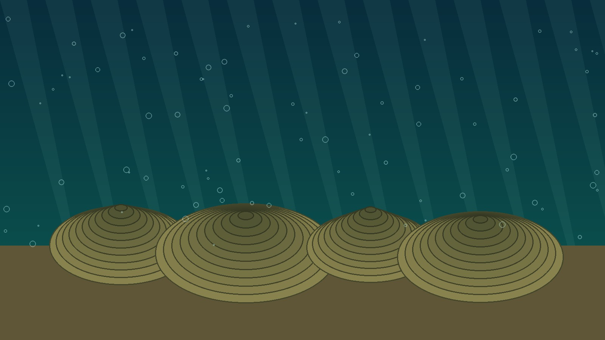

Hadeano
Formação da Terra e da Lua, intenso vulcanismo e impactos.

Era 01 · Projeto Dinovadores
De cerca de 4,6 bilhões a 541 milhões de anos atrás
O Pré-Cambriano representa a maior parte da história da Terra. Foi nesse longo intervalo que o planeta se formou, surgiram os primeiros oceanos, a atmosfera começou a se transformar e apareceram as primeiras formas de vida.
Experiência interativa
Os estromatólitos são estruturas produzidas pela atividade de comunidades microbianas e representam de forma clara o início da vida no Pré-Cambriano.
O espaço já está reservado para o modelo 3D e para a realidade aumentada. Basta adicionar posteriormente o arquivo assets/models/stromatolite.glb.

Linha do tempo
Formação da Terra e da Lua, intenso vulcanismo e impactos.
Primeiros oceanos, crostas estáveis e formas de vida microscópica.
Aumento do oxigênio e surgimento de organismos multicelulares.

Capítulo 01
No início, a superfície era muito quente e instável. Vulcões, meteoritos e gases moldavam um ambiente sem plantas ou animais. Com o resfriamento gradual, formaram-se as primeiras porções sólidas da crosta.

Capítulo 02
O resfriamento permitiu que o vapor de água se condensasse. Chuvas prolongadas preencheram regiões baixas da superfície e deram origem aos oceanos primitivos.
Primeiras formas de vida

Organismos unicelulares surgiram nos ambientes aquáticos.

Estruturas formadas pela atividade de comunidades microbianas.

Microrganismos fotossintetizantes transformaram oceanos e atmosfera.

No final do Proterozoico apareceram organismos com várias células.
Marcos da era
Consolidação do planeta.
Surgimento do satélite natural.
Água líquida na superfície.
Início da vida conhecida.
Liberação de oxigênio.
Transformação da atmosfera.
Organismos eucariontes.
Organismos ediacaranos.
Você sabia?
O Pré-Cambriano corresponde a aproximadamente 88% da história do planeta.
Galeria


Desafio